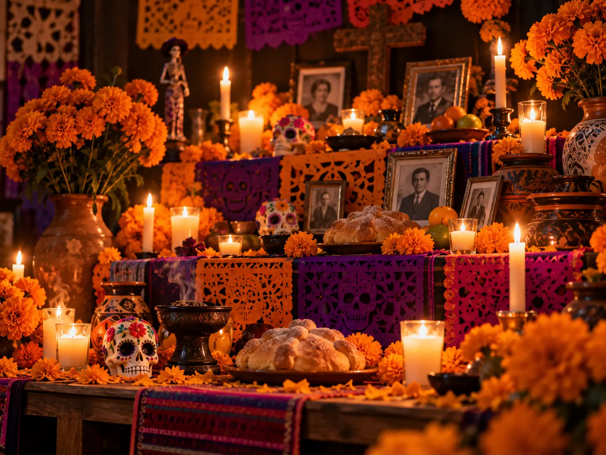

Origen y Significado del Dia de Muertos
Una celebracion ancestral que une las raices indigenas y la tradicion catolica para recordar, recibir y honrar a quienes ya no estan. Cada altar cuenta una historia familiar a traves de objetos, alimentos y fotografias.